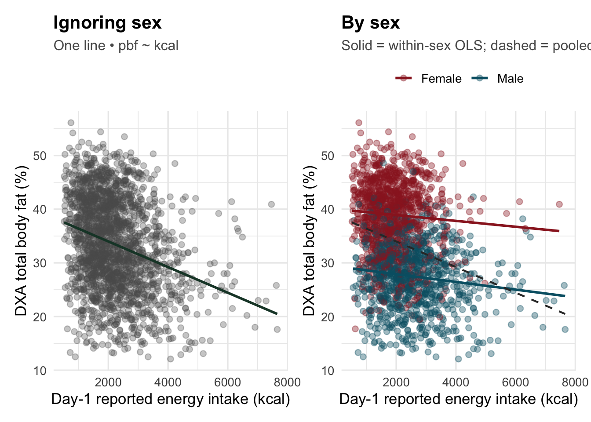
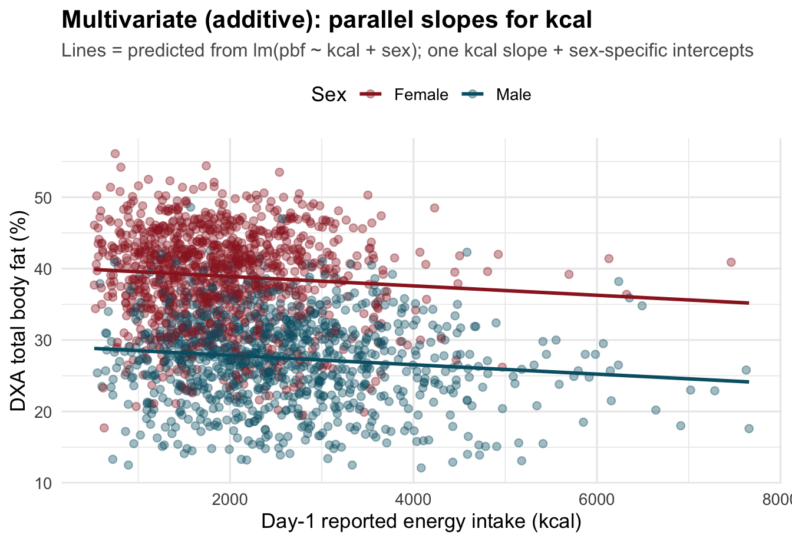
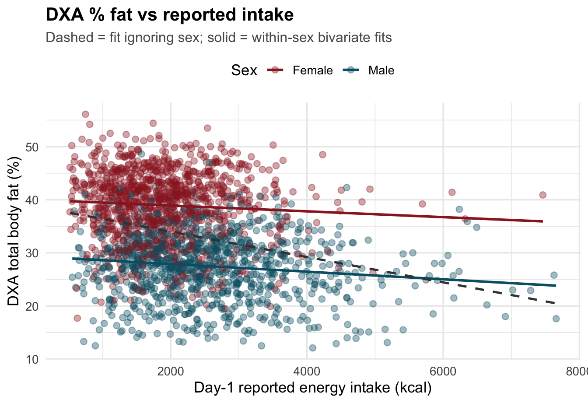

demo <- nhanes("DEMO_J")
dxx <- nhanes("DXX_J")
dr1 <- nhanes("DR1TOT_J")
d_raw <- demo |>
select(SEQN, RIAGENDR, RIDAGEYR) |>
inner_join(dxx |> select(SEQN, DXAEXSTS, DXDTOPF), by = "SEQN") |>
inner_join(dr1 |> select(SEQN, DR1TKCAL), by = "SEQN") |>
mutate(
age = as.numeric(as.character(RIDAGEYR)),
kcal = as.numeric(as.character(DR1TKCAL)),
pbf = as.numeric(as.character(DXDTOPF)),
sex = RIAGENDR
)
d <- d_raw |>
filter(
!is.na(age), age >= 20, age <= 59,
as.numeric(DXAEXSTS) == 1L,
!is.na(kcal), !is.na(pbf),
kcal >= 500, kcal <= 8000
) |>
mutate(sex = factor(sex, levels = c("Female", "Male"))) |>
select(SEQN, age, sex, kcal, pbf)Confounding: reported energy intake vs DXA body fat % (NHANES)
Bivariate vs multivariate regression with sex in the model
Question
Does higher self-reported calorie intake predict higher total body fat percentage?
NHANES provides 24-hour dietary recall energy (DR1TKCAL, kcal, day 1) and DXA total body fat percent (DXDTOPF) on overlapping participants. Sex relates to both average intake and average adiposity. A pooled scatter can therefore show a Simpson-type pattern: the marginal association between intake and fat % may look more negative (or more “wrong”) than the same predictor after adjusting for sex in a linear model — even though the within-person measurement story is messy (single-day recall is noisy; cross-sections mix body size and behaviour).
This note mirrors the FAMuSS lesson: one panel = fit ignoring sex, stratified panels = by sex, plus an explicit multivariate (parallel-lines) picture for pbf ~ kcal + sex.
What to expect empirically
In recent cycles (e.g. 2017–2018), adding sex usually moves the kcal coefficient a lot toward zero (big confounding by sex), but the adjusted slope on kcal may still be negative because a one-day recall and unmeasured factors do not give a “clean positive dose–response” for adiposity. Use this document for geometry of adjustment, not for causal claims about diet.
Data (NHANES 2017–2018, cycle J)
Files (same letter suffix) merged on SEQN:
- DEMO_J —
RIAGENDR(sex),RIDAGEYR(age) - DXX_J —
DXAEXSTS(DXA exam status),DXDTOPF(total % fat, whole-body DXA) - DR1TOT_J —
DR1TKCAL(day-1 total energy, kcal)
We keep adults aged 20–59 (DXA % fat in these files targets ages 8–59; adults are the usual teaching slice), participants with a completed whole-body DXA scan (DXAEXSTS first level in the labelled factor: scan completed), and plausible day-1 recalls (DR1TKCAL between 500 and 8000 kcal).
Sample size
Complete cases in this document: N = 2070 (Female 1081, Male 989).
Descriptive pattern
d |>
group_by(sex) |>
summarise(
n = n(),
mean_age = mean(age),
mean_kcal = mean(kcal),
sd_kcal = sd(kcal),
mean_pbf = mean(pbf),
sd_pbf = sd(pbf),
.groups = "drop"
) |>
knitr::kable(
digits = 2,
caption = "Age, reported kcal (day 1), and DXA total % fat by sex"
)| sex | n | mean_age | mean_kcal | sd_kcal | mean_pbf | sd_pbf |
|---|---|---|---|---|---|---|
| Female | 1081 | 40.20 | 1898.48 | 803.21 | 38.97 | 6.49 |
| Male | 989 | 39.75 | 2549.80 | 1116.96 | 27.49 | 6.15 |
Regression: bivariate vs adjusted
mod_bi <- lm(pbf ~ kcal, data = d)
mod_adj <- lm(pbf ~ kcal + sex, data = d)
bind_rows(
tidy(mod_bi) |> mutate(model = "Bivariate: pbf ~ kcal"),
tidy(mod_adj) |> mutate(model = "Adjusted: pbf ~ kcal + sex")
) |>
filter(term %in% c("(Intercept)", "kcal", "sexMale")) |>
select(model, term, estimate, std.error, statistic, p.value) |>
knitr::kable(
digits = 4,
caption = "Coefficient tables — focus on `kcal` (change in fat % per 1 kcal)"
)| model | term | estimate | std.error | statistic | p.value |
|---|---|---|---|---|---|
| Bivariate: pbf ~ kcal | (Intercept) | 38.7594 | 0.4297 | 90.2060 | 0 |
| Bivariate: pbf ~ kcal | kcal | -0.0024 | 0.0002 | -13.5133 | 0 |
| Adjusted: pbf ~ kcal + sex | (Intercept) | 40.2153 | 0.3328 | 120.8370 | 0 |
| Adjusted: pbf ~ kcal + sex | kcal | -0.0007 | 0.0001 | -4.5822 | 0 |
| Adjusted: pbf ~ kcal + sex | sexMale | -11.0454 | 0.2924 | -37.7749 | 0 |
Slopes in percentage points per 1000 kcal (easier to read):
tibble(
model = c("Bivariate (pooled)", "Adjusted (+ sex)"),
per_1000_kcal = c(coef(mod_bi)["kcal"], coef(mod_adj)["kcal"]) * 1000
) |>
knitr::kable(digits = 3, caption = "Fat % change per +1000 kcal (linear approximation)")| model | per_1000_kcal |
|---|---|
| Bivariate (pooled) | -2.386 |
| Adjusted (+ sex) | -0.657 |
Within-sex OLS slopes (exploratory; not the same estimand as the adjusted model unless assumptions line up):
d |>
group_by(sex) |>
group_map(~ broom::tidy(lm(pbf ~ kcal, data = .x)) |>
filter(term == "kcal") |>
mutate(sex = .y$sex, .before = 1)) |>
bind_rows() |>
transmute(
sex,
estimate_per_kcal = estimate,
per_1000_kcal = estimate * 1000,
p.value
) |>
knitr::kable(digits = 4, caption = "Within-sex bivariate slopes on kcal")| sex | estimate_per_kcal | per_1000_kcal | p.value |
|---|---|---|---|
| Female | -5e-04 | -0.5472 | 0.0259 |
| Male | -7e-04 | -0.7189 | 0.0000 |
Figures
Pooled vs stratified (same layout as FAMuSS)
pal <- c(Female = "#9b2226", Male = "#005f73")
xlab <- "Day-1 reported energy intake (kcal)"
ylab <- "DXA total body fat (%)"
p_pooled <- ggplot(d, aes(kcal, pbf)) +
geom_point(alpha = 0.32, colour = "grey35", size = 2) +
geom_smooth(method = "lm", se = FALSE, colour = "#1b4332", linewidth = 1) +
labs(
title = "Ignoring sex",
subtitle = "One line • pbf ~ kcal",
x = xlab, y = ylab
)
p_strat <- ggplot(d, aes(kcal, pbf, colour = sex)) +
geom_point(alpha = 0.38, size = 2) +
geom_smooth(method = "lm", se = FALSE, linewidth = 1, aes(colour = sex)) +
geom_smooth(
method = "lm", se = FALSE,
aes(group = 1),
colour = "grey20",
linetype = "dashed",
linewidth = 0.75,
inherit.aes = TRUE
) +
scale_colour_manual(values = pal, name = NULL) +
labs(
title = "By sex",
subtitle = "Solid = within-sex OLS; dashed = pooled line",
x = xlab, y = ylab
)
p_pooled + p_strat + plot_layout(widths = c(1, 1))
Multivariate model: parallel lines (pbf ~ kcal + sex)
The adjusted model constrains one shared slope for kcal with different intercepts by sex (no interaction). Overlaying those fits shows what “holding sex constant” looks like on the scatter.
kcal_grid <- seq(min(d$kcal), max(d$kcal), length.out = 150)
pred_line <- expand.grid(
kcal = kcal_grid,
sex = levels(d$sex),
stringsAsFactors = FALSE
) |>
mutate(sex = factor(sex, levels = levels(d$sex)))
pred_line$pbf_hat <- predict(mod_adj, newdata = pred_line)
ggplot(d, aes(kcal, pbf, colour = sex)) +
geom_point(alpha = 0.38, size = 2) +
geom_line(
data = pred_line,
aes(x = kcal, y = pbf_hat, colour = sex),
linewidth = 1.05
) +
scale_colour_manual(values = pal, name = "Sex") +
labs(
title = "Multivariate (additive): parallel slopes for kcal",
subtitle = "Lines = predicted from lm(pbf ~ kcal + sex); one kcal slope + sex-specific intercepts",
x = xlab, y = ylab
)
Slide-style single panel: stratified + pooled dashed
ggplot(d, aes(kcal, pbf, colour = sex)) +
geom_point(alpha = 0.38, size = 2.2) +
geom_smooth(method = "lm", se = FALSE, linewidth = 1, aes(colour = sex)) +
geom_smooth(
method = "lm", se = FALSE,
aes(group = 1),
colour = "grey25",
linetype = "dashed",
linewidth = 0.9,
inherit.aes = TRUE
) +
scale_colour_manual(values = pal, name = "Sex") +
labs(
title = "DXA % fat vs reported intake",
subtitle = "Dashed = fit ignoring sex; solid = within-sex bivariate fits",
x = xlab, y = ylab
)
Take-home
Y ~ XandY ~ X + Zcan tell very different stories whenZis associated with bothXandY. HereZis sex.- The additive multivariate model
pbf ~ kcal + sexis drawn as parallel lines (samekcalslope, sex-specific intercept). Compare that geometry to the dashed pooled line frompbf ~ kcalalone. - For inference on NHANES you would normally account for the survey design (weights, PSUs); these plots use unweighted OLS for teaching visuals only.
- Prefer two-day averaging of recalls (
DR1TKCAL,DR2TKCAL) in serious analyses to reduce random day-to-day noise.
Source
CDC/NCHS National Health and Nutrition Examination Survey. Example cycle: NHANES 2017–2018. Module documentation: search variable names DR1TKCAL, DXDTOPF on the NHANES website.